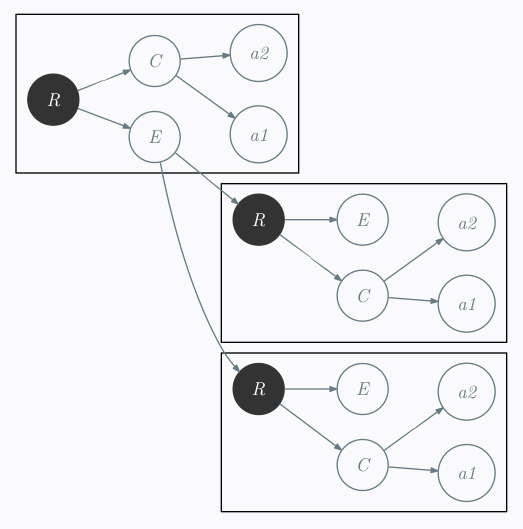
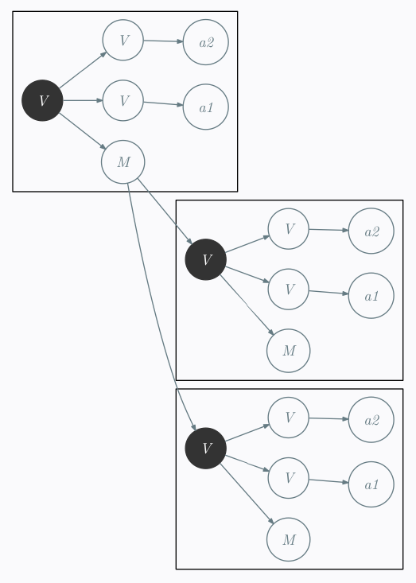

Arbres ; Pragmatisme et Formalisme
tlpl: :
- J’ai essayé de programmer un simple filtre ;
- J’ai été bloqué pendant deux jours ;
- J’ai arrêté de penser comme un robot ;
- J’ai utilisé un papier et un stylo ;
- J’ai fait un peu de maths ;
- J’ai résolu le problème en 10 minutes ;
- Conclusion: Pragmatisme n’est pas : «n’utilisez jamais la théorie».
Résumé (plus long que le tlpl: )
Je devais résoudre un problème à mon travail. Au début cela semblait assez facile. J’ai donc commencé à programmer tout de suite. Je suis alors entré dans un cercle infernal d’essais et de réparations. Voilà à quoi ressemblait cet étrange état de boucle infini :
– Plus que ça a réparer et ça devrait être bon.
– Très bien, maintenant ça doit marcher.
– Oui !!
– Ah mince! J’ai oublié ce détail…
répéter jusqu'à la mort
Après deux jours à me prendre pour Sisyphe, je me suis arrêté pour repenser le problème. J’ai pris un stylo et une feuille de papier. Je me suis souvenu de de ce que j’avais appris sur les arbres pendant mon doctorat. Finalement, le problème fut résolu en moins de 20 minutes.
Je pense que la leçon à retenir de cette expérience est de se souvenir que la méthodologie la plus efficace pour résoudre ce problème pragamtique était la méthode théorique. Ça ne signifie pas que la méthode théorique est toujours la meilleure, mais en tout cas, il ne faut pas l’écarter.
L’anecdote
Apparemment 90% des programmeurs sont incapable de programmer une recherche binaire sans faire de bug. L’algorithme est pourtant connu et facile à comprendre. Cependant, il est difficile à programmer sans bug. J’ai participé à ce concours. Vous pouvez voir les résultats ici1. J’ai dû faire face à un problème similaire à mon travail. Il paraissait simple au départ. Transformer un
Voici le format général du
<rubrique>
<contenu>
<tag1>value1</tag1>
<tag2>value2</tag2>
...
</contenu>
<enfant>
<rubrique>
...
</rubrique>
...
<rubrique>
...
</rubrique>
</enfant>
</menu>et le format d’arrivé est celui-ci :
<item name="Menu0">
<value>
<item name="menu">
<value>
<item name="tag1">
<value>value1</value>
</item>
<item name="tag2">
<value>value2</value>
</item>
...
<item name="menu">
<value>
...
</value>
<value>
...
</value>
</item>
</value>
</item>
</value>
</item>À première vue, cela m’a paru simple. J’étais certain de pouvoir y arriver en me fixant les règles suivantes :
- ne pas utiliser
xslt ; - ne pas utiliser de parseur
xml ; - résoudre le problème en utilisant un simple script perl
Vous pouvez essayer si vous le souhaitez. Si vous attaquez ce problème directement en écrivant le programme, ce ne sera certainement pas si simple. Je peux le dire, parce que c’est ce que j’ai fait. Et je dois dire que j’ai perdu une journée de travail complète en m’y prenant de la sorte. En réalité, il y avait pas mal de petits détails dont je ne parle pas qui m’ont induis en erreur et qui m’ont fait perdre encore plus de temps.
Pourquoi étais-je incapable de résoudre ce problème si simple en aparence ?
Voici comment je m’y suis pris :
- Réfléchir
- Écrire le programme
- Essayer le programme
- Vérifier les résultats
- Trouver un bug
- Résoudre le bug
- Reprendre à l’étape 3
Il s’agissait d’une méthode de travail standard pour un ingénieur en informatique. L’erreur venait de la première étape. J’ai d’abord pensé à comment résoudre le problème mais avec des yeux d’ingéinieur pragmatique. Je me suis simplement dit :
Ça à l’air de pouvoir se résouvre avec un petit script de search&replace en perl Commençons à écrire le code maintenant.
C’est la deuxième phrase qui est complètement fausse. Parce que j’avais mal commencé et que cette méthodologie de travail ne fonctionne pas lorsque l’on part vraiment mal.
Réfléchir
Après un certain temps, j’ai arrêté de programmer et je me suis dit : «Maintenant, ça suffit !». J’ai pris une feuille et un stylo et j’ai commencé à dessiner des arbres.
J’ai commencer par simplifier un peu en enlevant le maximum de verbiage. Tout d’abord en renommant <item name="Menu"> par un simple M par exemple. J’ai obtenu quelque chose comme :

et

Puis, je me suis fait la réflexion suivante :
Dans les distances d’éditions sur les arbres, chaque opération atomique correspond à un simple search and replace sur mon fichier
- substitution: renommer un nœud
- insertion: ajouter un nœud
- délétion: supprimer un nœud
Une des particularité avec les transformations sur les arbres est celle-ci : supprimer un nœud et tous ses enfants deviendront les enfants du père de ce nœud.
Un exemple:
r - x - a
\ \
\ b
y - c
Si vous supprimez le nœud x, vous obtenez
a
/
r - b
\
y - c
Et regardez ce que ça implique quand on l’écrit en
<r>
<x>
<a>value for a</a>
<b>value for b</b>
</x>
<y>
<c>value for c</c>
</y>
</r>Alors supprimer tous les nœuds x revient à faire passer le
s/<\/?x>//gPar conséquent, s’il existe un transducteur déterministe à un état qui permet de transformer mes arbres ; je suis capable de transformer le
Solution
Transformer cet arbre :
R - C - tag1
\ \
\ tag2
E -- R - C - tag1
\ \ \
\ \ tag2
\ E ...
R - C - tag1
\ \
\ tag2
E ...
en celui-ci :
tag1
/
M - V - M - V - tag2 tag1
\ /
M --- V - tag2
\ \
\ M
\ tag1
\ /
V - tag2
\
M
peut-être fait en utilisant le transducteur déterministe à un état suivant:
C -> ε
E -> M
R -> V
Ce qui peut-être traduit par les simples directives Perl suivantes :
s/C//g
s/E/M/g
s/R/V/gUne fois adapté au
s%</?contenu>%%g
s%<enfant>%<item name="menu">%g
s%</enfant>%</item>%g
s%<rubrique>%<value>%g
s%</rubrique>%</value>%gEt c’est tout.
Conclusion
Même si cela peut sembler paradoxal, parfois la solution la plus efficace à un problème pragmatique est d’utiliser une méthodologie théorique.